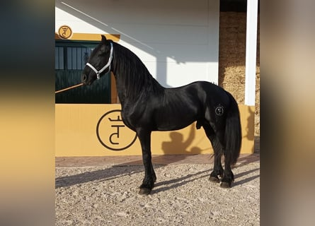
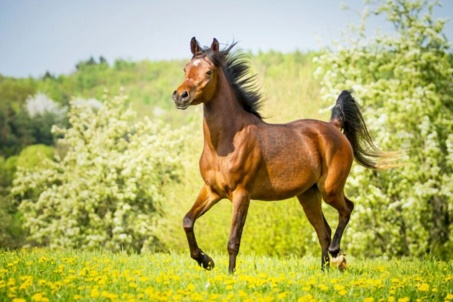
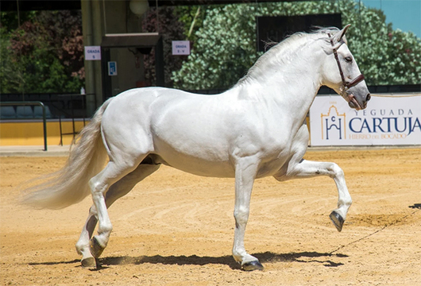

Origen:La procedencia de este equino, como su propio nombre indica,
es de Bretaña, una región del noroeste de Francia. Este caballo
desciende de la unión entre un, un Ardenés un Caballo Percheron y un
Bolonés. Los carreteros lo usaron a partir de la Edad Media.
Talla:La alzada del caballo bretón está entre 1,55 y 1,65 metros y
su peso ronda los 800 kg. En general es de color castaño, a menudo con una crin rubia, pero también puede ser gris, rojo o azul ruano. La raza tiene una cabeza bien proporcionada de tamaño medio, con un perfil recto y con un cuello fuerte y corto, bien situado en la cruz, y muy musculado.
Caracter:El caballo bretón suele tener un carácter dócil y es muy
resistente, es por ello que es utilizado como caballo de tiro.
Además se adapta bien a todo tipo de trabajos agrícolas.Es un caballo robusto, rústico y trabajador, no es exigente ni caprichoso, es familiar y agradable. A pesar de su gran masa y sus extremidades cortas, tiene el paso rápido y también un animado trote.
Frison

Origen:El caballo frisón es una de las razas más antiguas de Europa
y proviene de la provincia neerlandesa de Frisia. El origen de esta
raza se remonta a hace más de 1000 años. Julio César y el
historiador romano Tácito ya habrían mencionado a estos garbosos
caballos en su época.
Talla::El caballo frisón presenta una alzada imponente de hasta 1,75 m. Las yeguas miden entre 1,55 y 1,65 m. En
cambio, los sementales solo se admiten para la cría a partir de los
1,58 metros. Este imponente animal pesa entre 520 y 770 kilos.
Caracter:Esta raza neerlandesa es pacífica, apegada a las personas y
sensible. Tiene unos nervios de acero, una gran rapidez de
aprendizaje y una enorme diligencia. Sin embargo, algunos ejemplares
utilizan su inteligencia para tomar sus propias decisiones. Por eso,
es necesario que el jinete practique un adiestramiento perseverante.
De lo contrario, el bondadoso y simpático frisón podría mostrar su
cara testaruda.
Árabe

Origen:Como una de las razas de cría pura más antiguas, el árbol
genealógico del caballo árabe se remonta al siglo VII. Según la
leyenda, los beduinos que vivían en la península arábiga en aquella
época utilizaron cinco yeguas que el profeta fugado Mahoma llevó a
Medina.
Talla:Esta raza alcanza una alzada de 1,48-1,60 m, siendo las yeguas
algo más pequeñas que los sementales. Al igual que sus parientes de
sangre, los purasangres árabes, puede tener menos costillas y
vértebras que otros caballos.
Caracter::Muchos conocedores asocian la palabra árabe con un
temperamento impetuoso. Y no es de extrañar, ya que estos caballos
tienen una necesidad inmensa de moverse y son muy alegres. Al mismo
tiempo, son sensibles y cariñosos. De hecho, les gusta el contacto
con las personas. Si tienes feeling con tu caballo árabe, aprenderá
de buena gana y te seguirá allá donde vayas. Además, estos caballos
se llevan bien con otras razas de caballo.
Pura sangre español

Origen:caballo español proviene de la cruza de caballos beréberes y
arabes con yeguas autóctonas. Se calcula que durante las primeras
invasiones de los moros a la península ibérica (siglo VIII d.C)
llegaron más de trecientos mil caballos de estirpe árabe y beréber.
Talla:El caballo pura raza española o andaluz es de tipo mesomorfo
(potente y compacto), con una alzada a la cruz alrededor de 1,60 m y
un peso de 570 Kg.
Caracter:Su temperamento es excelente, tranquilo y dócil. Que no es
exigente en su cría, ni en su mantenimiento, ni tampoco en su
manejo.
Pura sangre ingles
Origen:Durante el siglo XVIII, los ingleses cruzaron sus yeguas
locales con sementales árabes, bajo el objetivo de obtener caballos
veloces y resistentes. En concreto, esta raza proviene de tres
caballos: el berberisco Byerley y los árabes Darley y Godolphin.
Talla:Una alzada a la cruz en torno a 1,60-1,80 m y un peso
aproximado de 400kg.
Caracter:Esta raza agrupa animales de gran personalidad, sensibles e
inteligentes.
Pura sangre frances
Origen:El origen de la raza de caballos Silla Francés data del siglo
xix. En dicho periodo los criadores de Normandía importaron
sementales de media y Pura Sangre de Gran Bretaña para cruzarlos con
caballos normandos, los cuales se caracterizaban por su anatomía
tosca, pero también gozaban de gran resistencia.
Talla:Su alzada oscila entre los 1,63 y 1,70 m. Y su peso entre los
400kg a 550kg.
Caracter:Tranquilo pero energico.
Criollo
Origen:Es una raza de caballo americano nativa de Argentina, Brasil,
Perú, Chile y Venezuela. La misma se obtuvo a partir de caballos
españoles, tales como la raza de caballo andaluz, berberisca y
árabe.
Talla:Los machos miden de altura entre 1,40 a 1,48 m y las hembras
1,38 a 1,46 m.
Caracter:De carácter activo, enérgico y dócil.
Cuarto de milla
Origen:Es una raza de caballo estadounidense antigua, creada en lo
que hoy se conoce como costa oriental del país, en la época de la
colonización. Es una combinación de caballos inglese, orientales y
españoles.
Talla:Tiene una altura entre 1,40 y 1,65 m, mientras que el peso va
de 500 a 600 kg.
Caracter :De buen caracter.
Appaloosa
Origen::Es una raza de caballo bastante popular, que tiene una
historia de unos 200 años, relacionada con tribus de la época. El
nombre se le relaciona con el río Palouse, en Estados Unidos, de
donde es la raza.
Talla:1,42 a 1,62 metros y un peso de 500 a 600 kg.
Caracter:Tienen muy buen carácter, siendo bastante fáciles de tratar
y relativamente sencillos de domar.Son además, sumamente
inteligentes y leales
Rocky montain horse
Origen:Es una raza propia de las montañas rocosas de los Estados
Unidos, que ha sido popular no solo en este país sino también en
Europa, a donde ha sido llevado.
Talla:Tiene una talla mediana, entre 1,43 y 1,63 m.
Caracter:Es un caballo resistente, pero a la vez es delicado y
disfruta de la compañía humano por su carácter generalmente
tranquilo